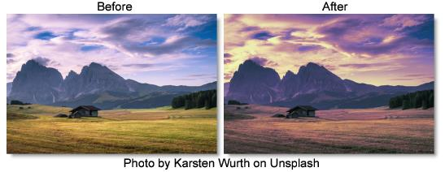

S_PseudoColor
Description
Colorizes the image by calculating the hue from the brightness.
The S_PseudoColor filter comes from the Emmy award winning Boris FX Sapphire filter set.
Category
Stylize.
Controls
Presets
To select a preset, pick one from the Presets window.
Frequency
The frequency of the colorization. Increase for more cycles of hue through the spectrum--decrease for fewer.
Hue Shift
Shift the color hues by this amount.
Saturation
Scales the color saturation. Increase for more intense colors.
Brightness
Scales the brightness of the result.
Scale By Source
The brightness of the output is scaled down by the original image brightness as this is increased to 1.
Scale By Src Amp
This amplifies the effect of Scale By Source, so if it is increased above 1, the middle grays can still retain their full brightness. It has no effect unless Scale By Source is positive.
Mix With Source
Interpolates between the result (0) and the original image (1).